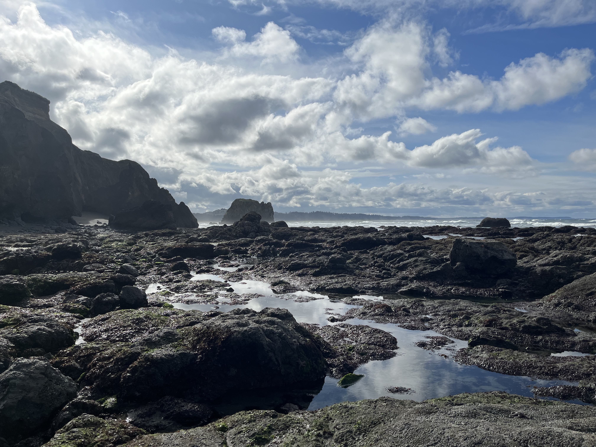
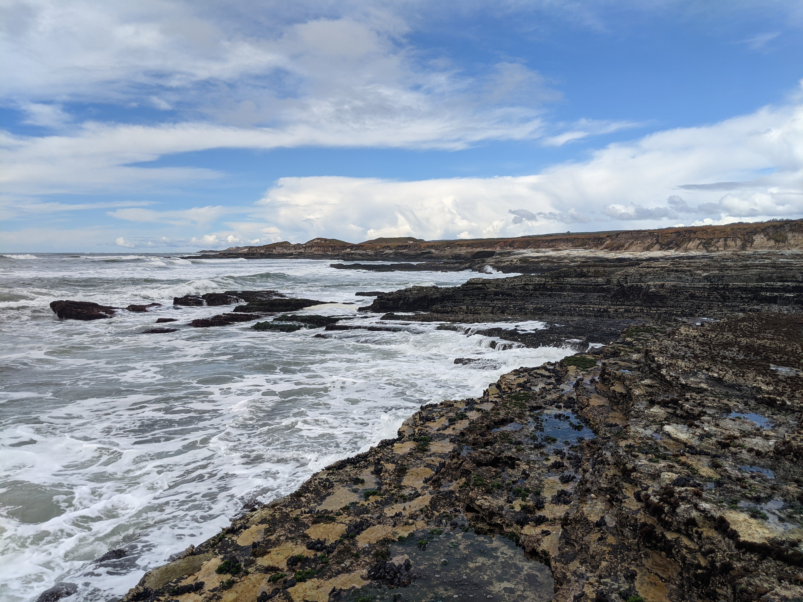
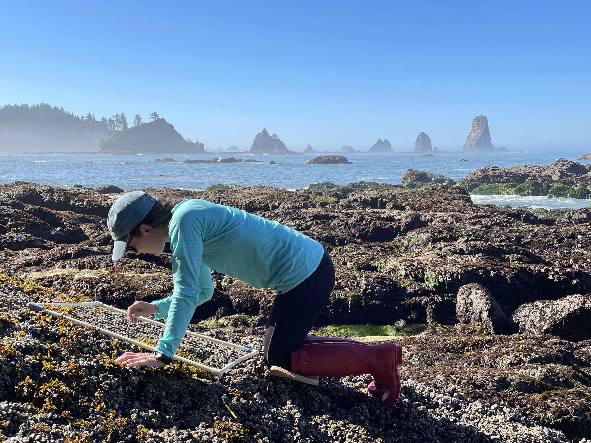
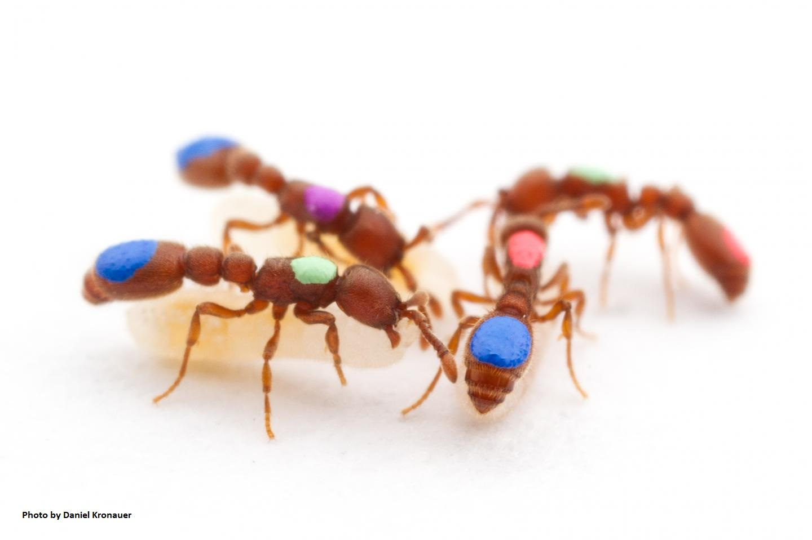
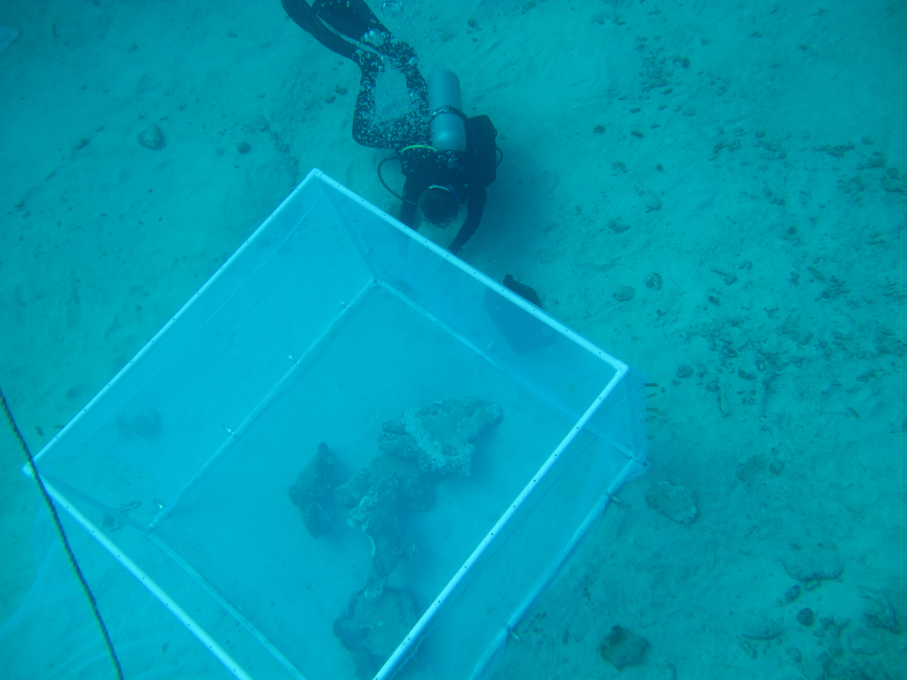
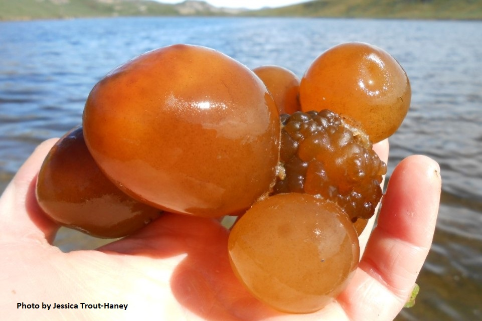

Research Areas
I am using the strawberry anemone (Corynactis californica) to study the impacts of marine heatwaves on marine populations. The strawberry anemone is a powerful model for studying individual variation in responses to climate change thanks to one particular species characteristic - they’re clonal!

Red, pink, and orange strawberry anemones in the lab.
The strawberry anemone (Corynactis californica) is a phenotypically diverse, clonal organism found on temperate rocky reefs in the California Current Large Marine Ecosystem. The strawberry anemone is a fierce competitor that aggressively defends its territory by growing colonies through asexual reproduction and using its nematocysts (stinging cells) against other benthic species. As a result, strawberry anemones have the capacity to provide an associational refuge to macroalgae and invertebrates from benthic predators that avoid contact with the nematocysts.
Ecologists are increasingly recognizing the influence of within-species (intraspecific) diversity to ecosystem structure and community dynamics. In the strawberry anemone, this variation may translate into species interactions - for example, sea urchins forage less when in the presence of particular strawberry anemone color morphs (see experimental results here).
In the context of marine heatwaves, working with the strawberry anemone allows me to isolate the effect of intraspecific variation when studying species responses to environmental disturbance. Importantly, how individual strawberry anemones respond to marine heatwaves may have important implications for species persistence and resilience to future heatwave events.
I am using a Raspberry Pi to recreate marine heatwaves in the lab, and measure the impacts of different marine heatwave intensities on strawberry anemones. Check out my Projects for more information on progress to date.
You can find my Github repository for my research-in-progress on strawberry anemones, including documentation on how to build the Raspberry Pi-based Marine Heatwave Simulator, here. You can find my previous research with strawberry anemones here and here.
I am studying the effects of ocean acidification on ecological, economic, and culturally-significant marine calcifiers such as the Pacific razor clam (Siliqua patula), the purple olive snail (Callianax biplicata), and the black turban snail (Tegula funebralis). These calcifying species are harmed by acidic waters; however, we do not yet fully understand the extent to which all populations across their distributed range are impacted by ocean acidification.

The rocky intertidal zone at Point Grenville, WA.

The rocky intertidal zone at Vandenberg SFB, CA.
Across the California Current Large Marine Ecosystem, which extends from Baja California (Mexico) to British Columbia (Canada), marine species are exposed to a mosaic of acidic conditions (due to upwelling). Climate change is predicted to intensify upwelling and shift ecological communities, but there is limited research on how marine populations across the coastline may differ in their response to ocean acidification and altered community structure.
My research uses these marine calcifiers to explore how different populations may be responding differently to variable pH conditions across their range. This research will reveal how calcifying marine species may vary spatially in their vulnerability and resiliency to ocean acidification, and will inform ecosystem management and conservation strategies in the context of future climate change scenarios.

Intertidal community studies in Olympic National Park, WA.
I am also developing a low-cost, open-source pH sensor using the Honeywell DuraFET pH electrode and an Arduino datalogger board. Check out my Projects for more information on progress to date.

Clonal raider ants painted for behavioral tracking. Photo by Daniel Kronauer.
As a research assistant in the Kronauer Lab at Rockefeller University, I worked on many projects developing the clonal raider ant (Ooceraea biroi) as a model organism to answer evolutionary, molecular, and neurobiological questions. One project sought to better understand the mechanistic basis of reproductive division of labor, the phenomenon attributed to eusocial insects (like bees, wasps, and ants) in which a single individual (the queen) lays eggs and all other individuals (the workers) carry out the other tasks necessary for the colony to function. For this project, I worked with graduate student Vikram Chandra and explored the role of a hormone - ILP2 (insulin-like peptide 2) - to the reproductive and brood-care phases of the clonal raider ant. We injected ants with ILP2 during their brood-care phase (when they shouldn’t be reproducing) and measured significant oocyte activity (egg production). Coupled with transcriptomics and brain antibody staining, our study provides evidence for the importance of ILP2, nutrition, and larval signals to division of labor in eusocial organisms.
You can read more about this research in the publication here.

SCUBA diving with invasive lionfish. Photo by Turtle and Ray Productions.
My research on invasive lionfish (Pterois volitans/miles) based out of the Caribbean Marine Biological Institute had two major focuses - predator prey interactions and pollutant bioaccumulation.
Predator-prey interactions
Invasive lionfish are creating extensive problems for many coral reef ecosystems by consuming massive numbers of reef fishes. Many scientists attribute this to the lionfish being a generalist predator - for example, when scientists dissect the stomachs of invasive lionfish across the Caribbean, they find a diversity of species (although some species are more common than others). I wanted to know if, when given a choice between prey items, lionfish are selective foragers. My field assistant extraordinaire, Tyler Fountain, and I stocked a large underwater enclosure containing an artificial reef with 3 prey species frequently consumed by invasive lionfish and observed what lionfish ate when released into the enclosures. Surprisingly, we found that lionfish consistently exhibited a preference for one prey species in particular - brown chromis. Knowing that lionfish exhibit active prey discrimination will help researchers better understand and predict the effects of lionfish on coral reef fish communities.
You can learn more in the publication here, the repository here, and in a blog I maintained while working in Curaçao here.

Setting up experimental enclosures containing artificial reefs.
Pollutant bioaccumulation
One way that humans are fighting to control invasive lionfish on coral reefs is by eating them. Because lionfish are a mesopredator (one step below apex predators), they have the capacity to bioaccumulate high, and possibly dangerous, levels of pollutants such as mercury and other heavy metals. On the island of Curaçao, there is an oil refinery that releases contaminants into the air and marine environment. I collected hundreds of lionfish around Curaçao and analyzed their tissue for metal contaminants. Unsurprisingly, mercury concentrations were higher in larger fish, but mercury concentrations overall were well below the human health criterion established by the Environmental Protection Agency. Lionfish also contained low levels of other metals such as arsenic and selenium. These findings support continued - and enthusiastic - consumption of invasive lionfish as a sustainable and environmentally-beneficial source of protein and income for local communities and tourists.
You can learn more in the publication here and in a blog I maintained while working in Curaçao here.

Sea Tomatoes from a lake in Greenland. Photo by Jessica Trout-Haney.
As an undergraduate at Dartmouth, I worked with Jessica Trout-Haney in the Cottingham Lab on Nostoc pruniforme (known colloquially as the sea tomato), a benthic cyanobacteria found in ponds and lakes in Greenland. Nostoc can be incredibly dense in some lakes (over 9000/square meter) and likely contribute microcystins (a cyanotoxin) into aquatic ecosystems. Our study coupled observations and experiments to examine how Nostoc produce and release microcystins, and my focus was on how microcystin production varies throughout the colony. We found microcystins throughout the colony and observed undamaged colonies leaking microcystins into the surrounding water. Coupled with field observations of elevated microcystin concentrations around Nostoc colonies in Greenlandic lakes, these results provide strong evidence for Nostoc pruniforme as microcystin producers in Arctic freshwater ecosystems.
Learn more about this research in the publication here.